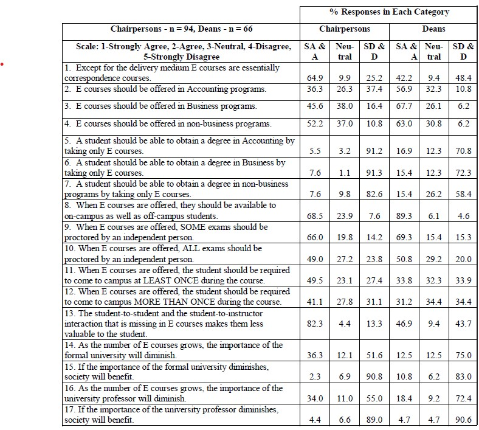
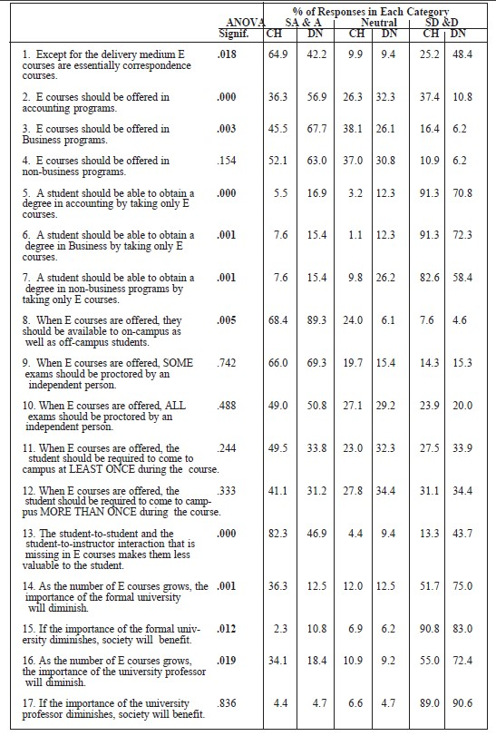
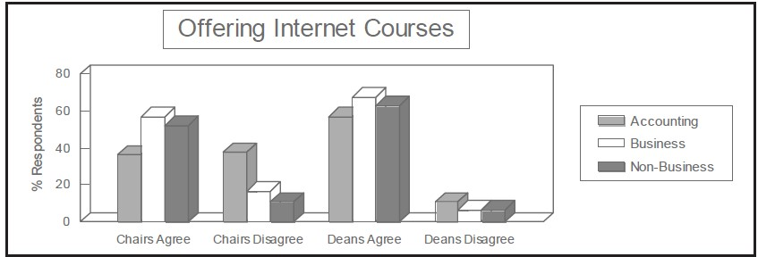
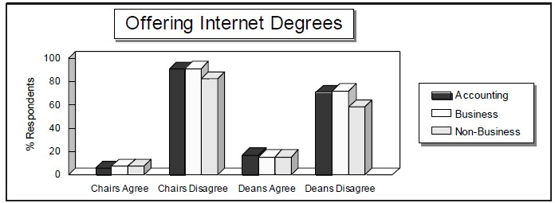
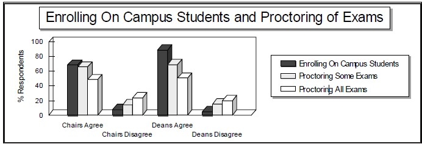
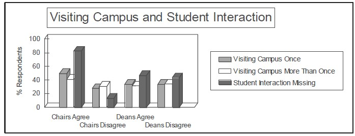

The Future of Distance Learning in the Traditional University 61
Table 1: Chairpersons’ and Deans’ response percentages

of deans disagreed or strongly disagreed. Between 9% and 10% of the chairpersons and the deans were neutral on the issue. Obviously, a substantial majority of the accounting department chairpersons view Internet courses as essentially correspondence courses delivered over the Internet while COB deans are about evenly split on the issue. In the minds of those chairpersons, any baggage that correspondence courses carried is apparently attached to Internet courses.
Responses to the second statement that “E courses should be offered in accounting programs” were almost evenly split for the chairpersons and in strong agreement for the deans. Slightly more than 36% of the chairpersons and more than 56% of the deans indicated that Internet courses should be offered in accounting programs. A relatively large portion, 26% and 32% of the chairpersons and the deans respectively, chose the neutral response.

The Future of Distance Learning in the Traditional University 63
When the same statement was posed relative to business programs, chairs’ opinions shifted toward the agree end of the scale. Almost 46% of the chairpersons and almost 68% of the deans agreed or strongly agreed with the statement that “E-courses should be offered in Business programs,” while only 16% of the chairs and 6% of the deans disagreed or strongly disagreed.
A further shift is found in responses to the statement related to offering Internet courses in nonbusiness programs. In response to the statement that “E courses should be offered in nonbusiness programs,” 52% of the chairpersons and 63% of the deans either agreed or strongly agreed, and only 10% of the chairpersons and 6% of the deans disagreed with the statement.
Opinions of accounting department chairpersons are about evenly split on the subject of offering Internet courses in accounting programs but are more tolerant of offering them in non-accounting programs. In fact, a majority of the respondents believed they should be offered in nonbusiness programs. Whether these views stem from a belief that accounting topics are less amenable to being mastered over the Internet or whether it is simply a “not in my area” reaction is not known. Independent study courses typically lack the structure, deadlines, and regular face-to-face student-instructor interaction that traditional courses possess. Most would agree that some topics are more easily learned through independent study than are others. Perhaps all that the respondents are conveying is that structure, deadlines, and student-faculty interaction is more important in accounting and business topics than in other areas.
As can be seen in Figure 1, the data indicate that COB deans have a significantly (at the 0.018 level) more favorable view of Internet courses than do accounting department chairpersons. This difference may be attributable to the different concerns of deans and accounting chairs. Deans are undoubtedly more concerned with the financial aspects of offering courses and might, therefore, more strongly support new enrollments and new sources of revenue. Accounting chairs might be more concerned with the quality of the courses being offered.
Accounting chairpersons move from being split on offering Internet courses in accounting programs to supporting their offering in business programs to more strongly supporting them in nonbusiness programs. The support of deans, however, is stronger for offering Internet courses in business programs than for offering them in nonbusiness programs. Apparently, 4.7% of the deans moved from supporting Internet courses in business programs to being neutral on offering them in nonbusiness programs. This may indicate a hands-off attitude toward programs in other colleges.
Overall, deans support offering Internet courses in accounting and business degree programs more strongly than do accounting chairs. These
64 Saunders
Figure 1: Data indicating that COB deans have a significantly more favorable view of Internet courses than do accounting department chairpersons

differences were significant at the 0.000 and the 0.003 level for accounting and business programs respectively. The opinions of chairs and deans on offering Internet courses in nonbusiness programs were not significantly different at the 0.05 level.
The next area considered dealt with the question of awarding degrees based solely on completion of Internet courses. In response to the statement that “A student should be able to obtain a degree in Accounting by taking only E courses,” an overwhelming 91% of chairpersons and 70% of deans disagreed or strongly disagreed. A surprising 72%, almost three quarters of the accounting chairpersons, and 41% of deans strongly disagreed with the statement.
Responses were not much different regarding the offering of degrees in business or in nonbusiness programs based solely on the completion of Internet courses. More than 90% of chairpersons and 72% of deans disagreed or strongly disagreed that business degrees should be offered solely over the Internet. On offering degrees in nonbusiness areas with all courses completed over the Internet, 82% of the chairs and 58% of deans disagreed or strongly disagreed while only 7% of the chairs and 15% of deans agreed or strongly agreed. The only noticeable shift in responses to the three statements is a move of about 14% of the deans from the disagree to the neutral category when considering Internet degrees in nonbusiness programs compared with accounting and business programs.
As vividly illustrated in Figure 2, accounting chairpersons are solidly opposed to universities offering degrees in any academic discipline totally through the Internet. They apparently believe that the campus experience gives the student a component of education that should not be left out of the degree experience. Deans are somewhat less opposed, and signifi-
The Future of Distance Learning in the Traditional University 65
Figure 2: Accounting chairpersons are solidly opposed to universities offering degrees in any academic discipline totally through the Internet

cantly less opposed than are accounting chairs, to offering degrees totally through Internet courses but a solid majority still does not believe that Internet degrees should be offered in any academic area. Little doubt exists that a degree that does not contain the campus experience is different from one that does. Whether it is better or worse is a question left for time and experience to answer.
One complication that universities face with Internet courses is that of on-campus students registering for courses and causing regular on-campus courses to have low enrollments. Because Internet courses are normally paid as an overload course, this shift in enrollment may result in less efficient use of one of the university's most costly resources, professors' class time. This issue was addressed by the statement: “When E courses are offered, they should be available to on-campus as well as off-campus students.” A substantial majority of respondents, 68% of chairs and 89% of deans, agreed that on-campus students should have the same access to Internet courses as off-campus students.
Another issue that faces designers and instructors of Internet courses is the proctoring of exams. Two statements addressed this issue. The first stated, “When E-courses are offered, SOME exams should be proctored by an independent person.” Sixty-six percent of the chairpersons and 69% of deans agreed. Only 14% of chairs and 15% of deans disagreed with this statement. A companion statement, "When E courses are offered, ALL exams should be proctored by an independent person," had 49% of the chairs and 50% of deans in agreement. Less than one-fourth, 23% of chairs and 20% of deans disagreed with the statement.
66 Saunders
As Figure 3 illustrates, the support of deans for making Internet courses available to all students was significantly stronger than that of the chairs. Perhaps accounting chairpersons and COB deans view this issue from a perspective of fairness; when Internet courses are offered they believe that all students should have equal access to them. Also, some independent confirmation of the level of student learning with Internet courses is essential. By more than a four to one margin, proctoring of some exams is considered essential and the proctoring of all exams is preferred by more than a two to one margin. The attitudes of chairs and deans on the proctoring of exams were not significantly different.
Figure 3: The support of deans for making Internet courses available to all students was significantly stronger than that of the chairs

Some universities that offer degrees solely through completion of Internet courses require students to come to campus for some of the classes during a term. Three statements were included that referred to that facet of Internet courses. When asked if students completing an Internet course should be required to come to campus at least once during the course, 49% of the chairs and 33% of deans agreed. An interesting note is that of the 33.8% of deans that agreed, 24% strongly agreed, and only 9% of the 34% that disagreed, strongly disagreed.
The second question related to requiring more than one campus visit during the course. A slightly smaller percentage of respondents, 41% of chairs and 31% of deans, agreed with this statement than agreed with the previous statement. The third statement relating to visiting campus asked, “If more than once, how many times in a three-semester hour course?” and 39 of the 92 chairs (42%) entered a number. The average number of campus visits indicated by respondents for students completing Internet courses was 5.54 times during the course. For deans who entered a number of campus visits (43
The Future of Distance Learning in the Traditional University 67
of the 66 responding, 65%) the average number of visits indicated was 2.77 for a three-hour course.
There should be little disagreement that the student-to-student and the student-to-instructor interaction is less in Internet courses than in traditional courses. A valid concern is whether this reduced interaction makes them less valuable to the student. By a more than six to one margin (82% to 13%) accounting chairs agreed that the reduced level of interaction in Internet courses makes them less valuable to students. Deans were about evenly split on the issue with 47% agreeing and 43% disagreeing.
As the graph shows, by almost a two to one margin (49% to 27%) accounting chairs believe the campus experience is a valuable component of a university course and that it should not be left completely out of Internet courses, while COB deans are about evenly split on the issue. Chairpersons favor requiring more than one visit, although by a slimmer margin, and deans shift slightly against requiring more than one campus visit. Accounting chairpersons strongly believe that a course that contains less student-tostudent or student-to-instructor interaction is a move in the wrong direction and the course is less valuable to the student; deans do not share this view. The difference in the views of chairs and deans on this question was significant at the 0.000 level.
Figure 4: Chairpersons favor requiring more than one visit, although by a slimmer margin and deans shift slightly against requiring more than one campus visit

The last two questions dealt with the perceived impact of Internet courses on the formal university. Regarding the statement, “As the number of Internet courses grows, the importance of the formal university will diminish,” 51% of chairs and 75% of deans disagreed with the statement. Neither accounting
68 Saunders
chairpersons nor COB deans appear to share Noam’s view of the Internet’s impact on the “traditional university.”
Some universities that offer degrees solely through completion of Internet courses require students to come to campus for some of the classes during a term. Three statements were included that referred to that facet of Internet courses. When asked if students completing an Internet course should be required to come to campus at least once during the course, 49% of the chairs and 33% of deans agreed. An interesting note is that of the 33.8% of deans that agreed, 24% strongly agreed, and only 9% of the 34% that disagreed, strongly disagreed.
Responses to a similar statement, “As the number of E-courses grows, the importance of the university professor will diminish,” were very similar to those relating to the university. Agreeing with the statement were 34% of the chairs and 18% of deans, while 55% of the chairs and 72% of deans disagreed with it. As with the university, neither accounting chairpersons nor COB deans are very apprehensive about any negative effects of expanded Internet course offerings on university professors. However, chairs were significantly more concerned about the impact of Internet courses on the university and on the professor than were deans.
Pearson correlations were run and significance levels determined for the relationships between responses to each of the 17 different statements for both the chairs’ and the deans’ responses. Responses of the chairs to the first statement that likened Internet courses to correspondence courses were significantly related to nine of the other sixteen statements. For the deans, Statement One responses were significantly related to five other statements. That relationship was negative, and significant, for Statements Two through Six for the chairs and Two through Four for the deans. Those results indicate that when chairs and deans tended to agree that Internet courses were “essentially correspondence courses,” they also tended to disagree that universities should offer Internet courses in accounting, business, or nonbusiness programs. In other words, respondents who thought Internet courses were essentially correspondence courses were more inclined to believe that Internet courses should not be offered in university programs. Accounting chairpersons who viewed Internet courses as correspondence courses also tended to believe that students should not be able to obtain degrees in accounting or business by taking only Internet courses.
Additionally, chairpersons who viewed Internet courses as essentially correspondence courses also tended to believe that all exams should be proctored for Internet courses, that students should be required to come to campus more than once, and that the student-to-student and instructor-tostudent relationships that are missing make the courses less valuable to students. As the respondents view Internet courses more like correspondence courses, their opinion of Internet courses appears to be lower and more restrictive.
Deans who considered Internet courses to be correspondence courses did not believe that all exams should be proctored, that students should be
The Future of Distance Learning in the Traditional University 69
required to come to campus more than once, or that the missing student-tostudent and instructor-to-student relationships make the courses less valuable to students any more than deans who did not view Internet courses as correspondence courses. They did, however, tend to believe more strongly that “As the number of E-courses grows, the importance of the university professor will diminish” and “If the importance of the university professor diminishes, society will benefit” than did deans who did not see the Internet course/correspondence course connection.
One interesting observation is, as chairs and deans tended to agree with the statement that “the student-to-student and the student-to-instructor interaction that is missing in E-courses makes them less valuable to the student,” they tended to disagree that Internet courses and Internet degrees should be offered in accounting, business, or nonbusiness programs. Two exceptions to this general observation are that, for deans, the relationships for offering Internet courses in accounting and offering Internet degrees in nonbusiness programs, and the interaction that is missing were only significant at the 0.059 and 0.098 levels respectively.
A surprising result was that deans who believed Internet courses were essentially correspondence courses also tended to believe that “As the number of Internet courses grows, the importance of the university professor will diminish,” and “If the importance of the university professor diminishes, society will benefit.” Chairs did not display that same tendency.
The questionnaire sent to the deans included Questions 18 and 19 which relate to the offering of Internet courses in each dean’s college. Question 18 asked “Does your college or university currently offer E-courses?” Forty of the deans responded in the affirmative (60%), 23 answered “no” (34%), and 3 did not indicate an answer.
Deans of COBs where Internet courses were currently being offered believed more strongly that Internet courses were not essentially correspondence courses with a different delivery medium. They also tended to agree more strongly that “E-courses should be offered in nonbusiness programs,” that “A student should be able to obtain a degree in Business by taking only E-courses,” and that “A student should be able to obtain a degree in nonbusiness programs by taking only E-courses.” Additionally, deans at schools that offer Internet courses disagreed more strongly with the notion that “When E-courses are offered, the student should be required to come to campus MORE THAN ONCE during the course.”
70 Saunders
COB deans at institutions that did not offer Internet courses were very strongly opposed to offering Internet degrees. In fact, 81% were opposed to offering Internet degrees in Accounting, 95% opposed offering them in Business, and 77% opposed offering them in nonbusiness areas. Roughly two-thirds of those opposed were strongly opposed to offering Internet degrees in the different areas. Those percentages compare with 65% of COB deans at institutions offering Internet courses opposed to offering Internet degrees in Accounting, 60% opposed to offering them in Business, and 47% opposed to offering them in nonbusiness areas. These differences could be a reflection of additional familiarity with and knowledge of Internet courses possessed by deans whose institutions offer Internet courses. On the other hand, they could reflect an acceptance and tacit endorsement of events occurring at their schools. Whichever is the case, the answer is beyond the scope of this data.
Question 19 asked, “If no, (to Question 18) do you plan to offer Ecourses in the next three years?” Of the 23 deans whose schools did not offer Internet courses at that time, 12 planned to offer them within the next three years and 11 indicated no plans to do so. Significant differences of opinion existed between those who planned to offer Internet courses and those who did not on only two questions. Deans who did not plan to offer Internet courses believed more strongly that a student should NOT be able to obtain a degree in Business by taking only Internet courses. They also tended to agree more strongly that “When E-courses are offered, the student should be required to come to campus MORE THAN ONCE during the course.” Apparently, deans who do not plan to offer Internet courses within the next three years are more skeptical about Internet courses. That is consistent with the differences based on responses to Statement 18, deans who do not currently offer Internet courses were more skeptical than those who do.
Opinions of accounting department chairpersons are about evenly split on the subject of offering Internet courses in accounting programs but are more tolerant of offering them in non-accounting programs. In fact, a majority of the chairpersons believed they should be offered in nonbusiness programs. COB deans, on the other hand, weigh in heavily in favor of offering Internet courses in accounting, business and nonbusiness programs. Whether the chairs’ views stem from a belief that accounting topics are less amenable to being mastered over the Internet or whether it is simply a “not in my area” reaction is not known. Deans may be viewing the question more from the